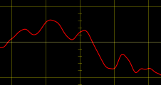
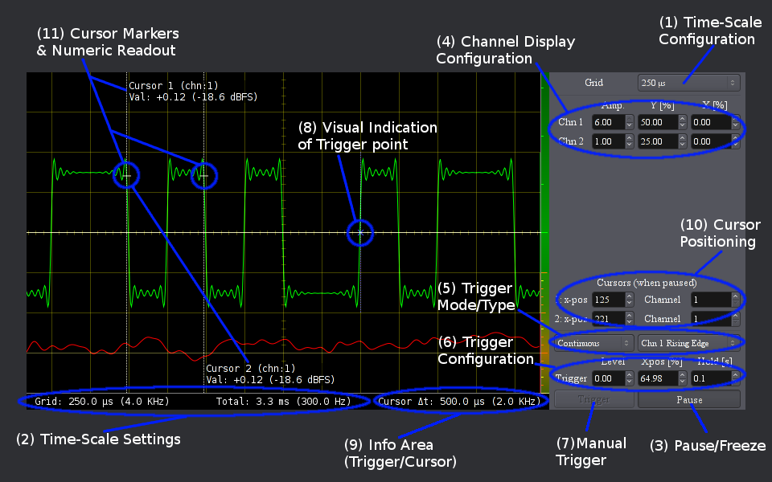

SiSco.lv2

A simple audio oscilloscope with variable time scale in LV2 plugin format.
SiSco implements a classic oscilloscope display with time on the X-axis and signal level on the Y-axis (for an XY mode display please
see Stereo-Phase-scope (goniometer) part of the meters.lv2 plugin bundle).
The minimum time grid resolution is 50 micro-seconds yielding a maximum resolution of 960kHz at 48SPS. The maximum buffer-time is 15 seconds.
The vertical axis displays floating-point audio-sample values with the unit [-1..+1].
While the visuals can be scaled by a factor of [-6..+6], allowing phase inversion, the numeric readout is not affected by the amplitude scaling.
Each channel can individually be offset horizontally, note that the offset is applied to the display only and does not span multiple buffers.
This allows to adjust the display even in 'paused' mode after sampling a signal.
Operation Modes:
- No Triggering
- The Scope runs free, with the display update-frequency depending on audio-buffer-size and selected time-scale. For update-frequencies less than 10Hz a vertical bar of the current acquisition position is displayed. This bar separates recent data (left of it).
- Single Sweep
- Manually trigger acquisition using the push-button, honoring trigger settings.
- Continuous Triggering
- Continuously triggered data acquisition with a fixed hold time between runs.

- (1) Time-Scale Configuration
- Allows to set horizontal grid-spacing in a range from 50 µsec to 1 second. The maximum oversampling-factor is 32. If the plugin runs at sampling-rates below than 32KSPS, the actual grid may differ from the selected setting. Check numeric the display (2) for the actual scale. The setting can be modified while paused (3) but will only become effective with the next acquisition run.
- (2) Time-Scale Display
- Actual time-scale display. The unit per horizontal grid and the total range of data-acquisition is displayed in both seconds and Hz. Usually the value is identical to the setting of (1), but may differ for low or odd sample-rates. This readout is based on actual samples-per-pixel mapping and always valid for the displayed data.
(3) Pause Toggle ButtonAllows to freeze the display in order to inspect acquired data. Pause is only available in free-run (no trigger) and in continuous-trigger after a complete acquisition cycle has been completed. Freezing the display also enables cursors (10, 11) to analyze the data.
(4) Per Channel Amplitude SettingsAllows to alter the waveform display. Vertical Zoom and polarity can be set with the "Amp" dial in a range from -6 to +6 (linear scale, corresponding to 30dB), X and Y offset are in percent of the screen width. These settings apply to the display-buffer only and hence can also be modified even when acquisition is paused.
(5) Trigger Mode and TypeAllows to select trigger mode [Off, Manual, Contd] and Type [rising edge, falling edge and channel].
(6) Trigger SettingsWhen triggering is enabled, the trigger-level can be set in the range corresponding to raw audio-data [-1..+1]. The X-position allows to position the trigger point in percent of screen-width. Note that the wave-form will only be displayed once the trigger position has been reached. Setting this value to 100% will avoid any flickering. The hold-time is only available in continuous trigger mode. It specifies the minimal delay between two acquisition cycles.
(7) Manual Trigger ButtonOnly available in Manual Trigger mode, initiate a single sweep honoring trigger-settings(6).
(8) Trigger IndicatorA vertical dashed line indicating trigger position and channel and a cross at the given trigger level.
(9) Info AreaWhen pause this area displays the time delta between the two cursor points in both seconds and Hertz. When running, this area is used to display trigger-status (if any).
(10) Cursor SettingsAllows to set horizontal position of cursors for numeric readout when the display is paused. Regardless of channels, two cursors are available. The x-position is given in pixels from the left screen edge. The channel number for each cursor defines the numeric readout: The sample-value of the specified channel at given x-position is printed on the display.
(11) CursorVisual Markers indicating signal level at given cursor position. At low-zoom levels - ie when one pixel corresponds to more than one raw audio sample - the minimum and maximum signal level is displayed.